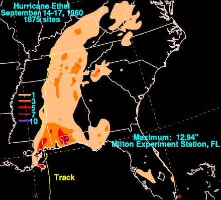

Hurricane Ethel was one of two major hurricanes in the 1960 Atlantic hurricane season. The sixth known tropical cyclone, fifth named storm, and fourth hurricane of the season, Ethel developed from a disturbance in the Gulf of Mexico on September 14. After becoming a tropical storm, Ethel rapidly intensified and became a hurricane six hours later. By early on September 15, the storm reached major hurricane intensity when it became a Category 3 hurricane on the Saffir–Simpson hurricane scale. However, shortly thereafter, Ethel rapidly weakened back to a Category 1 hurricane while brushing eastern Louisiana. Later on September 15, Ethel weakened to a tropical storm. Early on the following day, Ethel made landfall in Pascagoula, Mississippi. The storm gradually weakened inland, before eventually dissipating over southern Kentucky on September 17.
The most significant storm of the season was Hurricane Donna, which at the time was among the ten costliest United States hurricanes. After the precursor caused a deadly plane crash in Senegal, the storm itself brought severe flooding and wind impacts to the Lesser Antilles and Florida, where Donna made landfall as a Category 4 hurricane. It moved northeast and struck North Carolina and Long Island, New York, while still at hurricane intensity. Donna caused at least 428 fatalities and $980 million (1960 USD) in damage. Hurricane Ethel reached Category 3 intensity, but rapidly weakened before making landfall in Mississippi, resulting in only 1 fatality and $1.5 million in losses. The final storm, Florence, developed on September 17. It remained weakened and moved erratically over Cuba and Florida. Only minor flooding was reported. Collectively, the tropical cyclones in 1960 caused at least 454 deaths and about $990.74 million in damage.
Meteorological history
Hurricane Ethel originated from a small tropical disturbance over the Gulf of Mexico on the morning of September 14, 1960.[1] It is estimated that Ethel developed into a tropical storm at 1200 UTC on that day, with an initial intensity of 45 mph (72 km/h).[2] The disturbance quickly developed within a region favoring intensification and the New Orleans Hurricane Warning Office issued their first advisory on the system, classifying it as an area of low pressure, at 1500 UTC.[3] Roughly six hours after becoming a tropical storm, Ethel was upgraded to a hurricane as it underwent an intense phase of explosive deepening. By this time, gale-force winds extended 150 miles (240 km) to the north of the center and 80 miles (130 km) to the south.[3] Ethel further intensified into a major hurricane, as it approached the Gulf Coast of the United States.[2]
Following a pass through the storm by a United States Navy reconnaissance plane, Ethel was declared a "severe hurricane"[3] with winds reaching 115 mph (185 km/h), equivalent to a modern-day Category 3 hurricane on the Saffir–Simpson hurricane scale.[4] At the time these winds were measured, a barometric pressure of 974 mbar (hPa; 28.7 inHg) was recorded, the lowest in relation to the hurricane.[3][4] However, shortly thereafter, cool, dry air began to entrain the storm, causing it to rapidly weaken.[4] In a six-hour span, the storm suddenly weakened to a Category 1 hurricane, a decrease of 25 mph (40 km/h).[2]
As Ethel neared landfall, forecasters within the United States Weather Bureau were unsure of the future track and intensity of the hurricane due to the unusual strengthening and weakening.[3] Around 1100 UTC on September 15, the center of Ethel brushed the coastline of Plaquemines Parish, Louisiana with winds of 90 mph (140 km/h). Continuing northward, the hurricane further weakened to a tropical storm as it was approaching the Gulf Coast of the United States. Shortly before 0000 UTC on September 16, Ethel made landfall in Pascagoula, Mississippi with winds of 70 mph (110 km/h).[2][3] Gradual weakening took place as the storm moved inland over Mississippi and by 1800 UTC on September 16, Ethel was further downgraded to a tropical depression. The remnants of the former hurricane continued moving towards the north-northwest before dissipating on September 17 over southern Kentucky.[2]
Preparations
Prior to Ethel's arrival, adequate warning allowed roughly 12,000 residents along the Mississippi coastline to evacuate to shelters, set up at churches and schools. Along a 200 miles (320 km) stretch of the Gulf Coastline, all fishing villages fully evacuated to safer places.[5] In Louisiana, at least 2,000 people had been evacuated from Grand Isle. Other towns were placed under emergency evacuations where Coast Guard boats were used to move residents to safer areas. Military aircraft were also moved from Keesler Air Force Base to other airfields across the country. Numerous schools and businesses were closed on September 15 in fears of a worst-case scenario, a storm with 160 mph (260 km/h) winds passing directly over Mobile, Alabama, a city of roughly 150,000 people. In Florida, the National Weather Bureau stated that preparations were not being undertaken fast enough nor as extensive as warranted.[1] According to the Red Cross, 48,000 people in the threatened region sought refuge in shelters; civil defense stated that 65,000 residents moved to shelters.[6]
Impact
Before the storm weakened rapidly, people feared a large storm surge over much of southeastern Louisiana. Preparing for the storm induced stress, which in one person contributed a fatal heart attack.[7] In Louisiana, a compact, rapidly weakening Hurricane Ethel brought significant wind and rain primarily east and southeast of New Orleans.[4] However, the storm caused a maximum surge of only 7 feet (2.1 m).[3] Although Ethel weakened significantly, the hurricane still lashed far southeastern Louisiana. At the United States Coast Guard station in Quarantine in Plaquemines Parish, Louisiana, sustained winds reached 92 miles per hour (148 km/h). A weather station in Venice reported a sustained wind speed of 90 miles per hour (140 km/h) and gusts to 105 miles per hour (169 km/h).[3] Rainfall totals included 7.45 inches (189 mm) at Quarantine, 5.66 inches (144 mm) at Hopedale, 5.50 inches (140 mm) at Buras, 4.85 inches (123 mm) at Burrwood, and 2.90 inches (74 mm) at Port Sulfur.[8]
Hurricane Ethel caused substantial beach erosion throughout the barrier islands of Mississippi but brought a relatively small storm surge of 5 feet (1.5 m) along the populated coastline. Roughly 1.8 miles (2.9 km) of the east end of Horn Island was lost. The storm also split Ship Island into two islands, east and west Ship Islands. However, few knew of this split until Hurricane Camille in 1969 Atlantic hurricane season substantially widened the split.[9] The sustained wind reached a maximum of 56 miles per hour (90 km/h) in Biloxi, Mississippi. Throughout the Mississippi Gulf Coast, winds reached gusts approached 70 miles per hour (110 km/h).[3] In Pascagoula, Mississippi, broken glass, fallen trees and signs covered the streets. Several areas were also flooded and power was lost in area where power lines were downed by high winds. Following the storm, Governor of Mississippi Ross Barnett ordered 100 Mississippi National Guard to Pascagoula and requested other troops in other areas.[5]
High winds also affected Alabama, reaching 60 miles per hour (97 km/h) and gusts of 70 miles per hour (110 km/h) at Fort Morgan (Alabama). Slight damage to beach cottages occurred in Dauphin Island and Gulf Shores and along Mobile Bay. Minor crop losses were reported in Clarke, Escambia, Mobile, Monroe, and Washington counties.[10] An F2 tornado also injured two people in the town of Mignon.[11]
Hurricane Ethel also brought heavy rains and strong winds to much of the Florida Panhandle.[3] A maximum of 12.94 inches (329 mm) of rain fell at an agricultural experiment station near Milton, Florida, the highest total measured at an official station and attributed to this storm.[12] Hurricane Donna struck Tampa, Florida, particularly hard earlier in the month, causing major flooding of Hillsborough River (Florida) at Zephyrhills, Florida on 12 September. People feared severe flooding of the Hillsborough River into Tampa, which did not occur.[13] The highest wind gust in the state was 50 miles per hour (80 km/h), measured in both Pensacola and Apalachicola.[10] A thunderstorm associated with Ethel produced lightning that hit a power station near Tallahassee, causing a citywide blackout for 10 minutes (600 s). According to Florida Highway Patrol, Ethel directly caused damage of $100,000 (1960 USD) in the state.[14] Additionally Ethel spawned four tornadoes[10] in Florida, one of which reached F2 intensity and damaged or destroyed 25 homes near Panama City.[15]
Beyond the Gulf Coast of the United States, Ethel dropped rainfall in the states of Georgia, South Carolina, North Carolina, causing little if any damage.[12] Throughout its path, Ethel caused $1.5 million (1960 USD) in damage and one indirect fatality.[4][7][10]